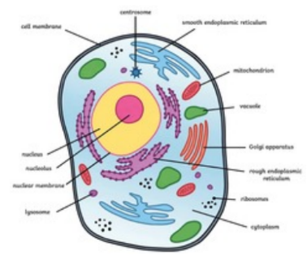

| Level |
Description and Detail |
Image |
Example |
Size |
| Atom |
- Smallest level of organization, what everything is made of.
- Atomic bombs and nuclear power plants split large atoms into smaller ones.
|
|
An atom of the element Carbon (C) |
100s of picometers (10⁻¹² meters) or 0.1 - 0.5 nanometers |
| Molecule |
- Groups of atoms and smallest unit of most chemical compounds.
- You can view molecules with an electron microscope.
|
|
Two hydrogen atoms and one oxygen atom form a water molecule (H₂O) |
A few angstroms (Å) |
| Macromolecule |
- A very large organic molecule composed of many smaller molecules.
- The DNA macromolecule contains the code needed to create copies of organisms like humans.
|
|
DNA, Lipids |
100 - 10,000 angstroms (Å) |
| Organelle |
- Specialized part of a cell, like an organ would be to an organism.
- Mitochondria are considered organelles and generate energy for cells using ATP.
|
|
Chloroplasts, Mitochondria |
1-10 micrometers (µm) |
Cell |
- Smallest unit of life that can function independently.
- Single-cell organisms (Protozoa) are visible in regular microscopes, although they are mostly transparent and need to be stained to be seen in full.
|
 |
Protozoa (amoeba, paramecium), specialized cells (muscle cells, blood cells)
|
1 - 100 micrometers (µm) |